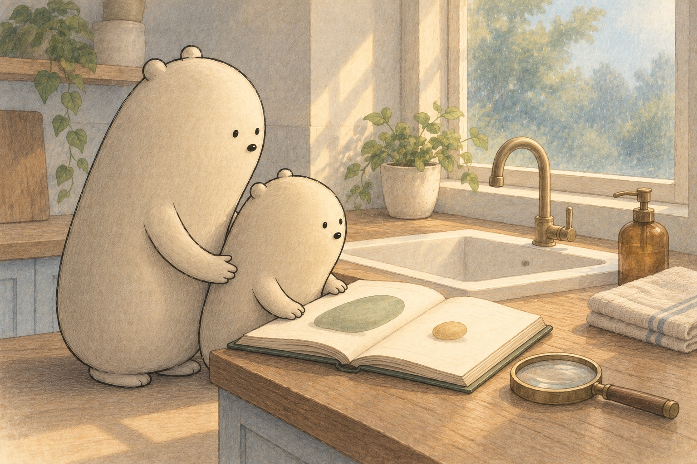

A little book of tiny guests
Tiny Guests

Little Wonderer held a magnifier beside the sink. “Can I see the tiny guests on my hands?” “Germs are far too small for just our eyes,” said Big. “Even that magnifier cannot show them.” They opened a book. Bacteria and viruses waited on its pages. Were these tiny guests alike?

Little paused at a yogurt cup. “Are all bacteria a problem?” “Many are helpers,” said Big. “Some live happily in your gut and help with food. Others help make yogurt. Some can make people unwell.” A bacterium is one whole living cell: a tiny unit with the parts it needs to live.

The next guest was much smaller. A virus is a tiny package of instructions in a coat, not a cell. It cannot make copies alone. It must borrow a living cell’s machinery: the parts that do the work. “Like a program saying ‘copy me’?” asked Little. “Instructions that need a cell,” said Big.
- bacteria
- tiny living things, each made of one whole cell
- cell
- a tiny unit that living things are made of
- virus
- a package of instructions in a coat that needs a cell to make copies
- soap
- a cleaner that loosens germs and can pull apart oily layers
- antibiotic
- a medicine that works on bacteria, not viruses
- immune system
- your body’s defenders, including cells that can learn and remember